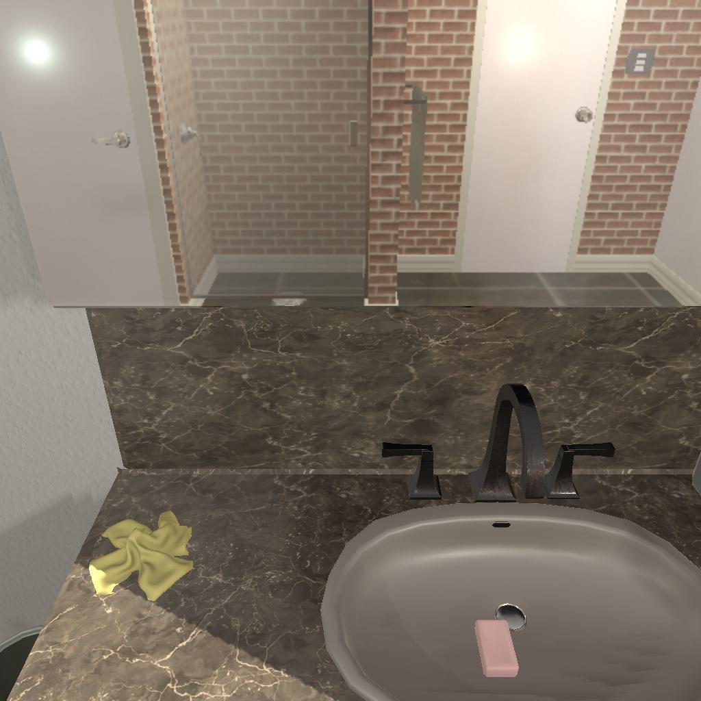

---------------------------------------------------------task: 27---------------------------------------------------------
--------------------------------------------------------------------------------------------------------------------------------------------------------------------
--------------------------------------------------------------------------------------------------------------------------------------------------------------------
Step:--------------------------------------------------------------------------4-------------------------------------------------------------------------------
----------------------------------------
VLM Prompt:
Image1:
Image2:
Image3:
**Instruction**
1. Analyze the provided images to identify all visible household objects and compare the difference between images (e.h. whether the object is opened or not and taken on hand or not), focusing on those relevant to the task description "find two soapbottle and put them in garbagecan."
2. Use the analysis of images and the task hint "The agent must find an object of the desired type, pick it up, find the correct location to place it, put it down there, then look for another object of the desired type, pick it up, return to previous location, and put it down there with the other object." to answer the question: what is the most reasonable action in the choices for the task description "find two soapbottle and put them in garbagecan"?
3. Decide and write the answer using the template: The answer is: (i): , where i is the real number. If there is no desired object in images, search every place based on **Initial Observation** to find the object. And if no one is exactly correct, choose a similar answer.
**Initial Observation**
You are in the middle of a room. Looking quickly around you, you can see countertop (1), sinkbasin (1-2), sink (1-2), garbagecan (1), drawer (1-2), toilet (1), handtowelholder (1)
**Answer Choices**
(1): go to sinkbasin 1
(2): go to sink 1
(3): go to garbagecan 1
(4): go to drawer 1
(5): go to drawer 2
(6): go to sink 2
(7): go to sinkbasin 2
(8): go to toilet 1
(9): go to handtowelholder 1
(10): put soapbottle 2 in/on countertop 1
(11): examine soapbottle 2
(12): examine countertop 1
**Answer**
Let's think step by step by following the instructions.
----------------------------------------
----------------------------------------
Original Response:
First, we need to identify the soap bottles. In Image 1, we can see two soap bottles on the countertop next to the sinks. One is closer to sink 1, and the other is closer to sink 2. There is no difference in the positioning of the soap bottles between Image 1 and Image 2, but in Image 3, we see one of the soap bottles has been picked up and is now in hand.
Now, considering the task description "find two soap bottles and put them in the garbage can," we need to pick up both soap bottles and place them in the garbage can.
From the **Initial Observation**, we know there is a garbage can in location 1. Since we already have one soap bottle in hand (as seen in Image 3), the next reasonable action would be to go to the garbage can to dispose of the one we are holding.
Therefore, the answer is: (3): go to garbagecan 1. Once we have disposed of the first soap bottle, we would then return to pick up the second one and repeat the process.
----------------------------------------
----------------------------------------
>>> Refine Original VLM Response and Get Pure Action: No action
----------------------------------------
-----------------------------------------------------------------
Running time: 18.894689559936523 seconds
Total Money: 16.904979999999995
-----------------------------------------------------------------
-----------------------------------------------------------------
Text Observation:Nothing happens.
-----------------------------------------------------------------
UNSUCCEED